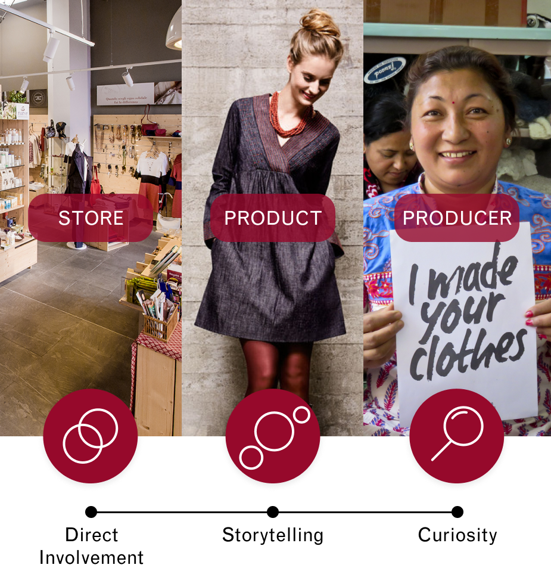

Altromercato Stories
A stor-e-telling app for Altromercato
Brief: choose a brand, enhance its shopping experience and convey its values through an appPeriod: two weeks
Summary
The challenge As two-weeks university exercise, five colleagues and I designed an application for Altromercato, an Italian fair trade brand that sells many products, including clothes. The prompt for the design came from an analysis of users’ comments retrieved from Altromercato social media. This analysis led us to identify customer’s needs that leave room to improve trust and loyalty to the brand.
The solution The result was the development of a strategic approach we called stor-e-telling that was the guide in the design of the application.
Context
The research started from understanding Altromercato’s values and mission through a brand identity analysis. We learnt that the brand relied on three core values: legitimacy, democracy and honesty.
Altromercato's mission envelops on three challenges: provide to marginalized manufacturer a real chance of entering the market, spread the principles and products of the Fair Trade and encourage social change.
Identifying room for improvement
Going deep in the research about the way the brand interacts with its customers, we started understanding the weak and pain points of the company.
The main problem was that users are interested in the product stories but they are annoyed with difficulties in finding that information. What was surprising was that the website had plenty of content regarding the products, but customers felt the lack of information in stores.
We aimed to exploit this opportunity to create an application to support the in-store experience by delivering the content requested by customers.
Competitors analysis
To understand if the proposal could make sense and to look for even more insights about what could have been done to support Altromercato, we analysed how competitors communicate themselves. We investigated four major aspects of each brand, namely their goals, products, touchpoints and social media content.
Concept
When we gathered enough information, we developed our concept: to inform customers through stor-e-telling. This approach relies on the idea of support the storytelling of products during shopping in physical stores. In this way, customers connect more with the producers and reinforce their motivation in shopping fair trade products.
Guiding questions
We developed an experience map to understand how the service could work. We collected some questions that a user could ask himself during the experience. These questions were guiding in the design of the application for Altromercato’s stores.
Design strategy
The developed strategy tries to strengthen user perception of the brand values through three main elements: stores, products and producers.
The aim was to create direct involvement using storytelling to arise the customers’ curiosity about product origin, fabrication, and so on.
In our scenario Altromercato should train its stakeholders to create these specific contents, providing easy-to-use formats. We envision that several kinds of contents could fit the purpose of delivering stories: videos, infographics, reportages and even tales.
The experience
We produced a storyboard to display the experience designed. The application usage was developed for in-store use, also because one of the requirements of the assignment was to keep the system simple. Nevertheless, it would be possible to improve the application by reasoning on the in-home use and whether it could create a community.
Application structure
In the end, we designed the application and its workflow. This prototype relied on content gathered from the brand’s media, since we could not produce an original one due to time assignment and lack of resources. Moreover, the purpose was to give randomised content each time the QR is scanned, but it couldn’t be done due to prototyping system limits.
Developed with:
Tobia Marconi,
Adele Mazzali,
Elena Panciroli,
Federica Rho,
Marta Romanelli